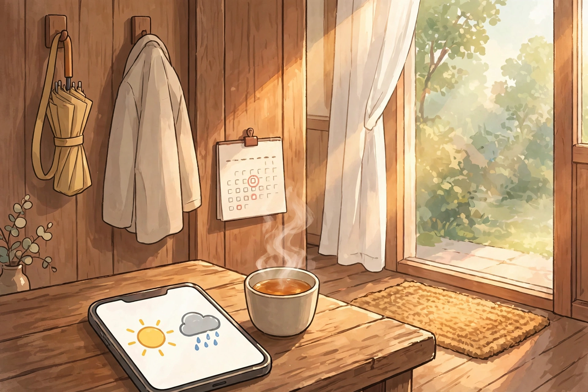

2026年11月22日｜キーワード：AI 天気 通知 カスタム
AIに天気の通知を自分仕様にしてもらうと、朝の準備が3ステップで決まる
天気予報は、見れば分かるのに、朝の忙しい時間には見落としがちです。運営者の暮らしでは、毎朝7時30分に起きて9時10分に家を出ます。家を出るまでに、天気とその日の予定と献立がそろって届く「朝のまとめ」があるのですが、天気の部分だけは「今日の天気は晴れ、最高気温は○度」という通り一遍の形になりがちでした。そこで頼んでいるのが、AIに「天気の通知を自分仕様にしてもらう」やり方です。知りたい天気を決める、通知の形を決める、条件付きのひとことを足す。この3ステップで、天気の通知は「見るもの」から「準備を決めるもの」に変わります。雨の日の傘も、寒暖差の日の上着も、通知のひとことで決まるようになります。
ステップ1：知りたい天気を決める
天気の通知を自分仕様にする最初の一歩は、「知りたい天気を決める」ことです。天気予報には気温・降水確率・風・湿度といろいろありますが、朝の準備に必要なのは、その全部ではありません。運営者の場合、出かける日の準備で必要なのは「家を出る9時10分ごろの天気」と「帰る夕方の天気」の2つです。場所も、家のある大阪市淀川区と行き先の2か所です。知りたいことを決めるときは、自分の1日の動きに合わせて「いつ・どこ・何を」と3つに分けて書き出します。いつは出発の時刻と帰りの時刻、どこは家と行き先、何をは最高気温と最低気温、降水確率、雨が降る時間帯です。花の見頃のお出かけや旅行の計画のように、場所が変わる日は、その日の行き先の天気を入れるようにします。知りたい天気を決めておくと、通知は「自分の動きに合ったもの」になります。
ステップ2：通知の形を決める
知りたい天気が決まったら、次は「通知の形を決める」ことです。形とは、どこに・いつ・どれくらいの長さで届くか、です。運営者の暮らしでは、天気の通知は毎朝のまとめの中の1行として届く形にしています。朝のまとめは、その日の予定・天気・献立がそろったものなので、天気だけを別の場所で見る手間がありません。通知の形を決めるときは、「1行で書く」「数字は気温と降水確率だけ」「長い説明は入れない」と3つ決めておきます。1行にすると、朝のまとめの中で天気の部分がすぐ目に入ります。数字を気温と降水確率だけにすると、読む量が増えません。長い説明を入れないのは、朝は読む時間が限られているからです。天気の数字は、AIに作らせるのではなく、その日の天気予報の数字を材料として渡して、その数字だけを使うように伝えます。材料にない数字が入っていたら、その行は確かめてから使います。通知の形が決まっていると、天気は「毎朝同じ形で届くもの」になります。
ステップ3：条件付きのひとことを足す
通知の形が決まったら、最後に「条件付きのひとことを足す」ことです。条件付きのひとこととは、「雨なら傘を」「寒暖差が大きい日は上着を」のように、天気の条件に合わせた準備のひとことです。条件は、自分の暮らしに合わせて3つまでにしておきます。運営者の場合は、①降水確率が高い日は「傘を持って出てください」②朝と昼の気温差が大きい日は「上着を1枚持って出てください」③風が強い日は「帽子や軽いものに気をつけてください」の3つです。条件は「〜なら〜する」の形で書いておくと、AIはその条件に当てはまる日だけひとことを足します。条件に当てはまらない日は、ひとことは入りません。ひとことが入るのは「準備が変わる日」だけなので、毎朝同じ注意書きが並ぶことはありません。条件付きのひとことがあると、天気の通知は「数字の羅列」ではなく、「今日の準備を決めるもの」になります。
天気の通知の頼み方（そのまま使える形）
天気の通知を頼むときは、知りたい天気と通知の形と条件付きのひとことを一緒に伝えます。下の頼み方を、そのままコピペして使えます。
毎朝のまとめの中に、天気の通知を1行で入れてください。知りたい天気は、家のある大阪市淀川区と行き先の本町の、家を出る9時10分ごろと帰る夕方の天気です。数字は最高気温・最低気温・降水確率だけで、その日の天気予報の数字を材料として渡すので、材料にない数字は入れず「未確認」と書いてください。長い説明は入れず、1行で書いてください。条件付きのひとことも足してください。条件は3つです。①降水確率が高い日は「傘を持って出てください」②朝と昼の気温差が大きい日は「上着を1枚持って出てください」③風が強い日は「帽子や軽いものに気をつけてください」。条件に当てはまる日だけひとことを足し、当てはまらない日はひとことを入れないでください。効果や成果を言い切る表現は使わず、天気の数字と準備の範囲で書いてください。
最初は自分の1日の動きに合わせて「いつ・どこ・何を」を決め、毎朝のまとめの1行から始めるのが続けやすいやり方です。知りたい天気を決める・通知の形を決める・条件付きのひとことを足す。この3つのステップが回り始めると、天気の通知は「見るもの」ではなく、「朝の準備を決めるもの」になります。
この記事の天気の通知は、博士みゅうの「定期実行の自動化とデータ集計」の中で回っています。毎朝のまとめの作り方は秘書みゅうのページで紹介しています。
入力場所は Instagram の固定投稿で案内しています